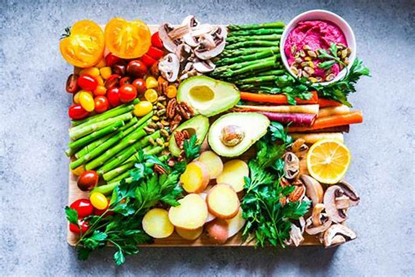
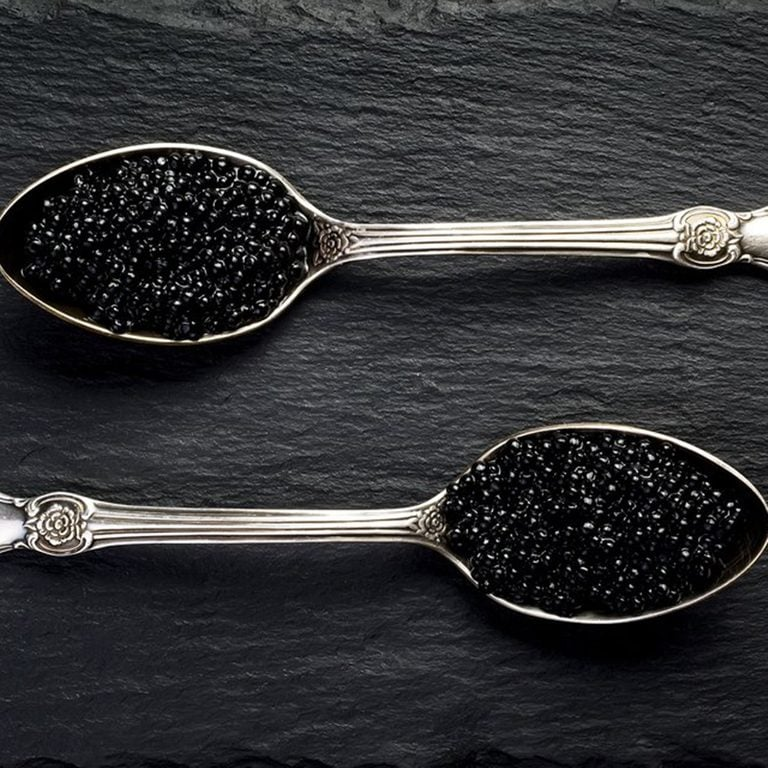

Tech
How to create the best UI with Figma - 12 Feb 2022UI design is the way that designer create for user to use and feel,focusing on the website or mobile app styles and look.UI designer is responsive for creating the product that user will find it easy to use and pleasurable.
For different people, UI design means and works differently.


Food
How to improve Diet of children And Adolescents - 12 Jan 2023Healthy food refers to food that contains the right amount of nutrients to keep our body fit. We need healthy food to keep ourselves fit. Furthermore, healthy food is also very delicious as opposed to popular thinking. Nowadays, kids need to eat healthy food more than ever. We must encourage good eating habits so that our future generations will be healthy and fit.
Food
The expensive food in the world - 10 Jan 2023White Pearl Albino Caviar is perhaps the most expensive food item in the world. Made from rare albino fish eggs, this caviar can be as costly as $300,000 per kilogram. The fish called albino beluga that produces this very rare caviar lived in the Caspian Sea originally, but they are now almost extinct in their native environment..
News
Why Congress has failed to pass policing reform in recent years - 22 June 2022As the nation awaits the release of body camera footage from Memphis police in the death of Tyre Nichols, calls for systemic police reform at the Congressional level are once again starting up. This is far from the first time in recent years that police reform has been a serious political discussion. President Joe Biden campaigned on a promise to reform policing. Since taking office, he's vowed to "sign into law a comprehensive and meaningful police reform bill."